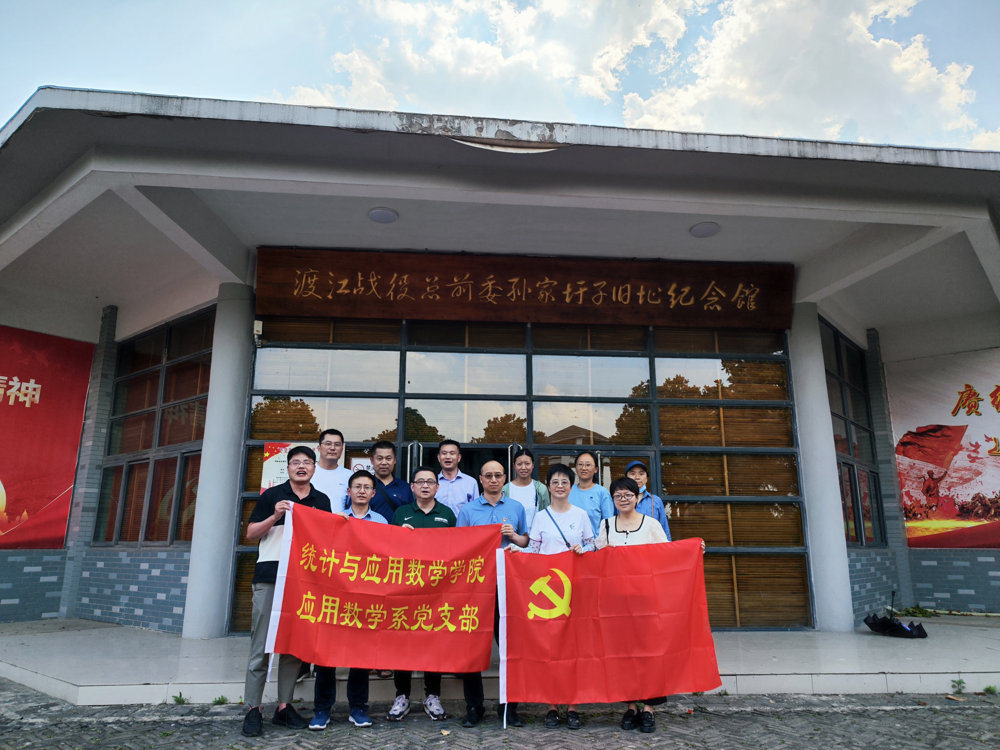

应用数学系党支部活动主页
导航
2023年秋季学期
- 2023年9月学习内容：习近平在四川考察时强调 要对主题教育的实效进行科学、客观评估 习近平在四川考察时强调 推动新时代治蜀兴川再上新台阶 奋力谱写中国式现代化四川新篇章 返京途中在陕西汉中考察 习近平赴四川陕西考察，足迹之中饱含深意
- 2023年9月学习内容： 《2023年高校党组织示范微党课展播》精彩看点
-
2023年8月26日学习内容： 习近平在江苏考察时强调 在推进中国式现代化中走在前做示范 谱写“强富美高”新江苏现代化建设新篇章
7月5日至7日，习近平在江苏省委书记信长星和省长许昆林陪同下，先后来到苏州、南京等地，深入工业园区、企业、历史文化街区、科学实验室等进行调研。
中共中央总书记、国家主席、中央军委主席习近平近日在江苏考察时强调，江苏拥有产业基础坚实、科教资源丰富、营商环境优良、市场规模巨大等优势，有能力也有责任在推进中国式现代化中走在前、做示范。要完整准确全面贯彻新发展理念，继续在改革创新、推动高质量发展上争当表率，在服务全国构建新发展格局上争做示范，在率先实现社会主义现代化上走在前列，奋力推进中国式现代化江苏新实践，谱写“强富美高”新江苏现代化建设新篇章。
2023年春季学期
- 2023年7月12日学习内容：组织全体党员观看2023高校党组织示范微党课第九讲——铸魂增智育新人，正风促干育新篇
-
2023年6月13日支部活动：组织常啸、洪振木、卢健等青年党员到菱湖社区进行志愿服务活动
新闻速递
-
2023年6月10日支部活动：组织支部党员参观了蚌埠市渡江战役总前委孙家圩子旧址
 1949年3月22日，邓小平、陈毅、谭震林等率渡江战役总前委、华东局、华东军区前方机关和三野司令部由徐州进驻到孙家圩子村。在这里，邓小平亲自组织拟定了渡江战役的纲领性文件《京沪杭战役实施纲要》等一系列重要文件，华东局制定了一系列的方针政策，华东军区确定了人民解放军的第一支海军部队华东军区海军的领导人选，第三野战军下达了《京沪杭战役作战命令》……为此，孙家圩子一度成为渡江战役的军事指挥中心和华东地区的政治决策中枢而名垂青史，成为军史乃至中国革命史上重要的一环。 - 2023年5月9日【学思想 见行动】：应用数学系党支部集中学习习近平新时代中国特色社会主义思想重要讲话精神 | 新闻速递
友情链接
- 铸魂增智育新人，正风促干育新篇——2023高校党组织示范微党课展播
- 央视网 | 共产党员网 | 中国共产党新闻网 | 中国教育新闻网 | 全国高校思想政治工作网
- 学习平台 | 知识自测 | 国家智慧教育平台 | 全国高校教师网络培训中心
- 中华人民共和国教育部 | 教育部思政司 | 教育部中国大学生在线 | 安徽省教育厅
- 安徽财经大学 | 安徽财经大学党委宣传部 | 安徽财经大学统计与应用数学学院
Copyright © 2023 应用数学党支部